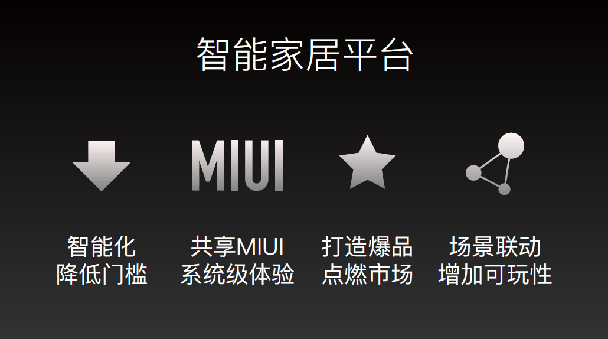

如何做好一场技术演讲学习笔记
| 演讲之前需要做好哪些准备？现场由听众提需求吧
Stay hungry, Stay foolish！
没有想到，流传已久的乔布斯斯坦福毕业演讲，却是他精心准备至少好几天的结果，尽管他当时已经是一位富有现场演讲经验的老手了。
这篇充电平台创立之初发布的小专栏，确实非常非常有价值。题目虽然是《如何做好一篇技术演讲》，但是却也适用于写作等其它需要做内容输出的地方。
概括来讲，这篇内容主要讲了三部分：
- 精心准备内容；
- 做刻意练习，精益求精；
- 调整好心理状态。
在第一部分，作者还拿研发的工程环节与演讲做了类比，在公司研发软件，软件上线之前会有需求评审、研发、提测、回归测试等多个环节，演讲也是如此，如果把最终演讲比作软件上线，那上线之前是有许多事要做的。这个类比很形象，程序员看了马上就会心领神会，会心一笑。
但是针对技术演讲，我还想做一点适用于自己的修改，关于第一部分，我设想的理想环节是这样的：

- 我是谁。自我介绍，我是谁，简单有礼貌。
- 讲什么。今天准备分享什么？它与前后节分享，有什么逻辑关系？特别是与上一节的分享有什么关系？
- 是什么。现场做一个软件演示，让听众直接感受到软件的运行效果。
- 啥原理。开始启发听众，它是怎么工作的，它的工作机制是怎么样的，它背后的工作原理是什么样子的，以此引导听众思考，激发听众的好奇心。
- 讲代码。打开代码，细致讲解代码是如何编写的，是如何工作的，解释给程序员听。
- 撸代码。既然了解了工作原理，接下来我们就开始做一个小实验吧。现场提出一个小需求，现场写代码，演示如何完成，最后展示劳动成果。当然了，如果这个需求是由现场听众提出来的，效果会更好。
- 咋运行。告诉听众，如果他拿了这套代码，如何在本地运行起来，有哪些需要注意的。
- 有啥用。和读者畅谈一下，这个软件的作用和意义是什么，未来它能干什么事情，我们对它还能做什么修改？
- 做总结。对今天的主题再做一个回顾，总结一下本次演讲的核心价值。如果有可能，对下期的内容做一个预告。
你觉得怎么样？对我提出的现场由听众提需求，现场编码展示这个设计，是不是觉得很刺激，很fashion？只要能完成这个环节，我相信每个程序员听众都会抑制不了马上躬身编码的冲动的。
| 怎样有效避免演讲前的紧张情绪？演讲四要素和一核三言
先分享一个我自己的真实的小故事。我在充电平台录课，最初几次每次来了以后，我都不上楼，不进录音棚，都是先在楼下徘徊近一个小时再上去。干嘛呢？就是备稿，我要把那个逐字稿，一个字一个字的反复默诵，反复推敲和修改，直到我完全对它们轻车熟路。而在此之前，我已经在出租车上默诵了近一个小时了。即便如此，我对自己的录课表现仍然不满意，我觉得还是能看出很多紧张情绪，还有很多可以改进的地方。但对我这个一向不爱说话的人来讲，已经是很大的进步了。
这一篇是继《如何做好一场技术演讲》第一篇之后的，一个关于克服演讲前紧张情绪的一个内容小分支。
概括一下，主要讲了两方面内容：一、对演讲建立客观认知，二、客观地对待演讲四要素。做好对这两部分内容的了解，再加一点点刻意练习，就可以克服紧张心理了。
1，对演讲建立客观认知
这里有两个小分支必须明确。
1.1，紧张是人源自基因的天性
许多演讲大佬也会紧张，比如乔布斯在参加斯坦福毕业演讲之前，前几天仍在紧张地备稿，为此甚至肠胃因紧张翻江倒海。还有英国伟大的首相丘吉尔，在演讲前，还在车里自言自语地备稿。
了解这些伟大人物他们也会紧张，他们成名以后也仍然会积极的备稿，对降低我们的紧张情绪，在认知上是十分有效的。如果不经过刻意练习，我们大多数人的演讲水平都是差不多的。
1.2，演讲前三分钟很关键
如果能够平稳的度过正式演讲的前三分钟，接下来我们基本就不会紧张了。紧张不但是一种情绪，它也会伴随着我们体内血液流动加快、呼吸急促等在内许多生命特征并发出来。
克服了最初的三分钟，之后就平稳了。在开始的这三分钟，我们可以用一个风趣幽默的自我介绍，加一段背得滚瓜烂熟的课程介绍，再加一点其它内容，将这三分钟「对付」过去。
2、客观的对待演讲四要素
演讲四要素包括：听众、内容、道具和演讲者自己。

2.1，先说听众
技术演讲，如果三分钟不能吸引听众的兴趣，可能听众马上就要拿起手机翻看朋友圈了。在线下脱口秀现场，一个脱口秀演员，如果30秒不能让观众发笑，可能大家都要吹口哨了。
要充分了解我们的群众是谁，他们普遍有什么需求？如果我们的听众是聋哑人，那么我们用声音演讲还合适吗，想来我们更应该用手语。
想想看如果我们面对的是刚入学的大学生，或者我们面对的是一帮企事业领导，我们的演讲会怎么样，不同的听众对象都会影响我们演讲的内容以及所用的口吻。
简单对听众做一些了解，就可以让我们现场更加胸有成竹。如果我们的听众都是小学生，我们又有什么好紧张的呢？
2.2，再说内容
内容很重要，有三点值得注意。
2.2.1，一核三点
听众在听完我们的演讲以后，我们希望他用怎样的一句话，向别人介绍我们这场演讲呢？
这句话就是我们本次演讲的核心价值。核心价值是我们克服心理紧张的底气。
有了这个核心以后，我们再拓展出三个问题：
第1个，它的原理是什么？为什么可以做到这样？
第2个，它在我们生产生活中，有什么用处和作用？这一点可以明确听众如何省时省钱的价值，可以促进他们给我们打好评。
第3点，我们是怎么做到的？如果听众也想使用，他们应该怎么做？
将这三个点，还有一句话核心讲清楚，相信演讲就已经成功了一大半了。这就是一核三点。
2.2.2，PPT 记住要多图少字
PPT切忌堆砌很多文字，要多图少字，一图胜千言。
2.3，道具
包括PPT在内，舞台、提词器这些都可以算作道具。
2.4，最后说一下演讲者
最重要的一条，就是要多做正式演讲前的练习，不要让正式演讲成为第一次。
其次，在练习上要注重仪式感。例如用手机录音，然后回放，找出自己在语言上的弱点。还可以架起摄像机，正式给自己录一下，看看自己的表现。这些仪式感可以让我们提起精神，更加有现场感，排练效果更好。
如果我们不将正式演讲作为第一次，那么我们还可能会讲很多次；反过来，如果是第一次的话，那么它可能就是最后一次。
以下是原内容的目录，供参考：
一、紧张情绪并不可怕
二、演讲之前要知己知彼
三、演讲内容要有价值
四、适可而止，不可贪多
五、PPT 只是配角
六、别让正式演讲是你的第一次
七、把握好最初的五分钟
| 如何在演讲中讲个好故事？
这篇内容的标题将我迷惑了，标题说“如何讲个好故事”，但其实它并不是单纯讲「如何讲故事」的，没有那么简单，这篇内容整体上讲了如何做好一场故事性的技术演讲。
先说一个讲故事的故事吧。
白岩松的搞疫故事
我们都知道白岩松是央视著名主持人，有一次他在湖畔大学讲课，分享的主题就是如何讲好一个故事，他的故事是这样讲的：
疫情期间，我们是全国最早统计新冠死亡率的。
通过对比死亡数据我们发现，武汉的死亡率比整个湖北省要高，整个湖北省又比全中国高。为什么会这样呢？
为此我们采访了杭州的李兰娟院士，她说：“在武汉，是一群病人等着一个医生；而在武汉以外，是一群医生扑向一个病人”。我们听到这个答案以后，非常振奋，对抗疫这件事情一下子变得有信心了。为什么呢？因为如果说死亡率只和医护人员的多寡有关系的话，那我们只需要加派人手就可以了。
于是后来的事情大家都清楚了，咱们国家增派了4万名医护人员支援武汉。到5月份，武汉抗疫已经取得了决定性胜利，武汉的水上花园都全面开放给游客了。而与此同时，西方某些国家虽然一直号称群体免疫，不限自由，但其实一直都没有真正得到过「水上花园」这样的自由。
好吧，现在白岩松讲故事的这个故事讲完了，在他这个故事当中有哪几部分呢，我们看一下：

-
第一部分，抛出问题。只有一句话，这句话就是“我们是全国最先统计新冠死亡率的”，这句话要勾起听众的好奇心。
-
第二部分，分析问题。媒体人通过现象看本质，提炼出事实，发现从武汉到湖北，再到全国，死亡率是依次降低的。这个分析要有理有据，要进一步抓住读者的好奇心。
-
第三部分，给出方案。这部分借助权威人士李兰娟院士的回答，给出前面疑问的答案，并且从逻辑上给出合理降低死亡率的方案。
-
第四部分，亮出结果。用赋比兴的修辞手法，陈述事实，对比中外，激发观众的爱国情感。
这四个部分，可能你已经发现了，就是上面的四个小段落，它们就像三段悬索桥的四个桥堆儿一样，是一个挨着一个。所以你看，记不住故事的结构没有关系，只要记住了白岩松的这个抗疫故事，然后照葫芦画瓢填内容就可以了。

“切西瓜式”等技巧
对于怎么讲故事，在这篇内容中作者也有讲。但是绝不仅仅是只讲了这一点。
现场的灯光，舞台，大屏幕，和舞台边缘的提词器，还有我们的PPT，这些都可以算作是道具。
在演讲过程中，演讲者很忌讳回头看背后的大屏幕。这会让听众感觉这个演讲者不自信。其实可以看舞台下方的小屏幕，大屏幕看不看是无所谓的。
还有演讲的PPT要简洁、大方、风格一致，但是也要避免由此造成的呆滞，最好要有一点点跳跃，一点点装饰动画。
文中还提到了演讲者的仪表和姿势。穿着最好是牛仔裤+体恤，这是标准的乔布斯式，大家对这个形象其实已经很认可了。
还有就是手势。手掌与地面垂直，做切西瓜状，这是最简单的，也是最适合绝大多数人的演讲手势。伟人一般用的，是一种从内向外横扫一切的手势，这不符合一般演讲者的身份。德拉克洛瓦名作《自由引导人民》里面的自由女神，右手高高举起旗帜，这种姿势也不可取。还有攥紧拳头，从下往上捶击，这是工人罢工的姿势，也不足取。相比之下，只有经典的切西瓜式最合适，谦逊内敛，落落大方，适用性也最强。
还有开头那一句话对我印象也很深刻：“不管演讲今天多么重要，未来只会变得更加重要”。所以我们要学习做演讲，特别是学习如何用讲故事的方式做好一场演讲。
| 如何把你的观点深深地刻在别人的脑海中？
读了这篇文章我才知道，把话讲清楚、表达清晰，只是方便我们更容易被理解，但并不能让我们的观点深深的印在听众脑海中，除了理解之外，起决定性作用的还有细节。
神经元是人类思考的物质基础
白岩松在一次关于如何讲故事的演讲中，讲过讲故事就是要见人见细节。见人，就是要露脸，方便我们共情，因为大家都是人类嘛。见细节，是方便我们将未知的东西，与已知的东西建立直链接，特别是与具象的东西产生连接，而且是链接的越多越好。
我们人类的大脑，是由一个一个的神经元组成的，神经元之间靠树突连接。一个人他的神经元多，并不代表他一定聪明；相反，起决定性作用的，在于神经元之间的树突连接是不是很多。
我们每个人来到这个世界上的时候，大脑都是一片空白的。现实世界中的具象，会首先进入我们的大脑，然后我们通过生活实践，在这个具象的基础之上，又建立了抽象的概念系统。
具象是抽象的根基。任何抽象的东西，其实都很难直接被我们大多数人记住。而那些能够与具体的事物联系、与生活相联系的内容，反而可以很快被我们记住。这就是白岩松说的讲故事要见细节。
还有在网文小说创作中，讲究三个字代入感。什么样的文字才容易产生代入感呢？就是要见人见细节，文字要让人能产生情感共鸣，同时有足够的细节描述，可以让人从抽象的文字中，联想到现实的生活场景中去。
画面与故事的定义是什么呢？
在这篇文字中，作者有这样一个定义。
“凡是能让人在脑海中产生画面感的话语或文字就是故事。”
这个定义我觉得有失偏颇。凡是能让人在脑海中产生画面感的话语或文字，应该是画面，而不是故事。故事是需要有情节的，情节是需要有起伏的，故事应该是由一个个画面组成的。
前面一篇中我们提到如何讲好一个故事，一共有三大段四个墩点：
- 提出问题
- 分析问题
- 解决问题
- 亮出结果。
这是对于技术性演讲而言，如果换成是写网文小说，更准确的表达应该是：
- 给主角创造麻烦
- 继而麻烦让主角不得不行动
- 紧接着主角开始分析麻烦，继而尝试解决
- 最后是解决麻烦
怎么才能写出故事画面感
前面提到，只有具象化的东西，才更容易让人记住。在这篇文章中，作者就向我们展示了哪些是有画面性的东西。这一点很重要，我原来就忽视了这一点。我原来以为的那些「具象」内容，其实对读者来说读起来很痛苦。引用文中的原例：
“从前有座山，山上有个庙……”是故事画面，“让用户脸上带着微笑离开”是故事画面。
而“自然环境中的宗教聚集地”不是故事画面，“一流的用户服务”不是故事画面，“吸烟有害健康”也不是故事画面。
对比一下前后，这些例子它们有什么区别呢？前面的例子，它不容易让听众想象出画面，它们都是抽象的，要么是概念，要么是判断，要么是推理。而后面的例子，都比较容易让人想到一个具体的物体或者是动作。
面向听众演讲
在这里面还有一点，就是能不能联想到具象的物体，跟听众也是有关系的。所以我们的演讲一定要考虑我们的听众是谁。这个要素很重要。
例如在技术性演讲中，我们要讲给谁听，这很重要。有时候我们习以为常的认为，那些HTTP网络请求协议，那些基本的「变量」、「函数」这些概念，在听众脑海中已是常识。但其实不是这样的，只是对于程序员来讲，如果他只是一个初学者，他还没有这些基本概念，他不知道你在说什么。他甚至可能以为，写代码就像写小说一样，想一想，代码就可以自动运行了。
这一点最近我深有体会，我觉得这是在技术性演讲中特别需要注意的。我们讲的常识，其实都是有一个空间范围和时间范围的。在哪个群体中，在哪个时代讲， 听众的常识都是不一样的。
刻意增加幽默
除了让内容具象化，还有一个很高级的技巧可以帮助我们让读者接受我们的观点，它就是幽默。这篇文字的评论区有一位读者贴了一个经典案例：
9月4日晚，无业游民张某，约网友刘某到自己的出租屋喝酒。期间，刘某感叹有钱人太多，张某随即表示“不如出去弄点钱”，刘某随即响应。解放路的监视探头显示，9月5号凌晨5时16分许，他们的早餐摊支起来了。
这个例子里面是有反转的，最后一句里面藏着一个小幽默。这样的段子，可以让我们的演讲氛围更加轻松，让我们的观点更容易被读者所接受。但是还是不能被观众轻易的记住，如果想让我们的观点深深的印在听众脑海中，还是要想办法将我们讲的内容，与读者的生活，与具体的事物尽量联系起来。
这里面就有一个矛盾。我们讲的内容读者都知道，读者会认为没有意思；如果完全不知道，又会让他觉得索然无味，很难理解与记住。所以，我们需要将那些听众不知道的、不了解的、未知的东西，与他们已知的东西拼命的联系起来，特别是与他们已知的具象的东西连接起来，这样才可以深深的印在他们的脑海里。
| 演讲中的肢体语言管理和声音控制有哪些门道？
这篇内容洋洋洒洒，妙趣横生，特别是前半部分。但是读了以后，感觉没有什么用，还是不知道怎么操作。因为内容没有刻意与具象的事物联系在一起，估计过不了多久我们也就全部忘掉了。
关于手势，对于大多数人来讲，最简单的还是切西瓜式。这也符合文章所讲的激情面和真实面，基本符合。
关于声调，这个就很难把握了。一场好的演讲，绝不是演讲者本人的独角戏，肯定是演讲者和听众共同完成的，就像演讲者带着听众一起跳舞一样。
好的演讲者懂得与他的听众保持「交流」，脱口秀演员管这个叫做节奏。具体怎么把握这个节奏，我也不知道，我唯一想到的就是多练习，并且是现场练习，在现场演讲时要注意和观众进行「交流」。
神枪手是拿子弹喂出来的，相信演讲高手也是通过一场一场的演讲历练起来的。
| 8 个技巧，帮你做一场漂亮的技术大会演讲
读了这篇文章受益匪浅，干货很多，我最大的感受是三个字：工程化。
所谓工程化，就是让整个演讲变成像程序一样，像可控的代码一样执行；使每个环节，都有可以遵循的公式，应用这些公式，甚至即使是机器人，也可以代替我们完成任务。关于工程化的具体想法，稍后在总结中细说。
开场公式
作者的这个开场就很好：
大家好，我是来自 58 到家的架构师沈剑（这一句点名了演讲的公司、职位和姓名）。 我在百度、58 同城有过多年的架构工作经验（这一句就是吹吹牛，增强信服力）。 接下来我会和大家介绍 58 到家订单中心的架构演进细节（这个就是内容介绍了）。
一共分为三部分，大约100个字。根据这个内容，我们可以抽离出这样一个开场公式：
大家好，我是来自某某公司的某职业岗位某某。 我在某某公司、某某单位做过多年某某项工作，有多年相关工作经验，曾获得过什么奖项。 接下来我和大家探讨一个什么主题。
只要按照这个公式，把空填好了，背熟了，开场时最紧张的第一个1分钟，就可以轻松得迈过去了。
如何组织内容
这个话题已在前面多篇内容已经涉及到了，概括起来公式就是：
- 提出问题
- 分析问题
- 解决问题
- 提炼总结
这是讲故事的内容结构，对应这篇内容中的“问题缘起 - 方案 - 优化方案 - 总结”，结构是类似的，只是叫法不一样。另外参考网文小说的写法，在“提出-分析-解决”这个环节，可以多次循环，让演讲略有波折。
如何组织PPT内容
我写PPT属于小学水平，一直用写书的思维去写PPT，其实这是不对的。
PPT是画面，我们更应该用画画的思维去创造它。幻灯片呈现给听众的是一张画，不要期望听众看这张幻灯片就能明白我们讲什么。PPT只是配角，演讲者才是主角。看PPT就明白了，还要我们演讲者干什么呢？
文章中作者举的对比例子就很好，概括一下有以下规律可循：
- 不要用1234这样的横向列表，要用没有数字的、有图标的纵向列表
- 不要用单一的白色背景，要用其它颜色，在一个页面上要争取用多个色块
- 多使用简洁的图标，少使用文字
不要想让听众通过幻灯片上的文字就明白我们的逻辑。事实上看起来有没有逻辑貌似不重要，整体看起来高端大气上档次才重要，毕竟PPT只是一个道具嘛。
附优秀的PPT示例：


不好的示例是这样的：

以前我就经常写这样的PPT。有图、有列表，看似很清晰很完备，其实很糟糕。
如何把握好演讲时间
或者说如何把握好演讲的节奏。读完以后我的想法是这样的：
- 根据演讲时长准备内容，每张PPT控制在5分钟，一个45分钟的演讲，我们只需要准备不超过10页的PPT就可以了。
- 将每张PPT里的料点，提炼成一个段子或一个对比句子，演讲时只要保证这个段子没有忘记就成功一半了。
- 其它内容，幻灯片之间的衔接，段子之间的跳跃，根据现场情况临时发挥，适当加一些“水”话进去。
如果时间紧张了，就把水分挤一挤；如果前面讲快了，后面就适当多放些水。
收尾的公式
通常一个演讲最终只有10%听众是记住的。在最后时刻，把自己的一核三点重审一下，这里为了效果好，我觉得有三点需要注意：
- 总结尽量用段子包装一下
- 尽量与生活的具象事物联系起来，像切西瓜式这个描述，就是一个很成功的抽象与具象的联系
- 最好有一些或一个「专有名词」，这些名词是只有听了前面的演讲才能明白的，这个地方的例子还可以举「切西瓜式」
问答环节的公式
这个环节作者分享的三个话术都十分实用，也是应对三种情况的公式。
1. 遇到挑战者
我们可以说：“今天分享的只是我们自己的实践，解决方案有很多，相信在不同场景、不同需求下会各有优缺点吧~”，然后回答下一位的问题。
2. 不能100% Get到提问者的点
这个时候我们可以说：“这位朋友要问的是不是这样一个问题呢…”，然后转向这个问题的现场分析与解答。
3. 遇到一个不能回答或难于问答的问题
原因可能有很多，但有些问题就是不方便在公众场合回答。
这个时候我们可以说：”这是个好问题，但很难用一两话讲清楚，感兴趣的话我们线下交流。”
总结一下，上面这三个话术都是在打太极。社会人，公众场合还是以和为贵。许多时候听众提问，除了想交流、想得到解答，有时候就是想有一个表达的机会，你机会给他了，基本他30%的需求就已经被满足了。如果提问者还会得到一些小礼品，那么50%的满意度已经有了。
以上吧，就是我读了这篇文章的想法。总体来讲，如果把演讲当作一个可控的工程，让每个环节都有范式可依，有章可循，这样演讲效果和演讲时间基本都是可控的了。几乎所有的公开演讲都有时间限制的，如果因时间控制得不好而仓促结束，这比某个环节讲的不好还要糟糕，毕竟完成比完美更重要嘛。
接下来我谈一谈我学了这个课程的总体感受。
总结：将技术演讲工程化
从演讲效果上讲，演讲从低到高有好几个层次：
-
讲清楚了，这个时候逻辑是清晰的
-
观众听明白了，并且感觉受益了，听众觉得有价值
-
现场效果好，观众不时发出笑声或鼓掌，效果好，就像乔布斯发布第一代iPhone那样
要达到第三个层次是很难的，大部分人第一个层次都很难做到，大多数人都很难有条理地将事情请明白。但讲明白，还不代表对听众有价值。在第三个阶段，就不只是讲清楚和有价值这么简单了，是要在总体逻辑连贯的前提下，增加幽默效果。就像天上的星座，以猎户座为例，猎户座各个星星之间本来就是没有连线的，是我们人类在想象中给它画上了这些线。在第三阶段，我们要特意擦掉那些使逻辑看起来更清晰的线，使演讲效果更加简洁，更具幽默感。
具体而言，我读了这个课程以后，有如下收获：
- 将演讲工程化，可以最大程度地保证演讲效果和控制好演讲时间。包括开场公式、问答环节公式、收尾公式等。
- 一场好的演讲绝不是演讲者在独舞，好的演讲者要懂得和他的听众保持「交流」。神枪手都是拿子弹喂出来的，优秀的演讲家都是一场场演讲历练出来的。
- 神经元是人类思考的基础，神经元之间的连接越多，越容易记忆和理解。演讲内容如果想让听众理解和记住，就要刻意和现实生活中的具体事物联系起来。那么虚无缥缈的概念，在听众离场的时候，就已经被忘到九宵云外了。使内容具象化，充满画面感，才有可能刻到听众脑海里。
- 故事的结构是这样的：提出问题、分析问题、解决问题和总结问题。人人都想听故事，讲故事是一般人提升演讲效果的不二法门。如果忘记了这个故事结构，没关系，就想一想白岩松讲的那个抗疫故事。
- 刻意加点幽默，能让现场效果更好。
- 演讲者手势，最简单的就是双肘90度沉于身体前方左右两侧，手掌与舞台垂直，做切西瓜状。「切西瓜式」，看人家这个名称起的多好，一下子就记住了，因为它是具象化的。
- 演讲者的穿着，牛仔裤+黑色T恤。
- PPT，一图胜千言。要花些心思，将逻辑清晰的横向列表，变成一下看不懂的竖向列表。删除多余的文字，多添加一些图标、背景色块和箭头。演讲用的幻灯片是作为一张画呈现的，并不是作为一页书呈现的。
- 紧张是人类公开演讲都有的情绪，是天生的，唯有多多刻意练习，录音练习、架摄像机练习、找朋友当面练习等等都可以。
- 正确和理智地对待演讲四要素：演讲者本人、内容、道具和听众。内容要随听众而变化，道具要为演讲服务。PPT也是演讲者的道具之一。在内容上一核三点很重要，想明白听众可能会怎么向别人介绍我们这场演讲，为什么会这样，有什么用途，听众如何做到。
以上就是所有内容了，不知道你学习了之后有什么感受，欢迎分享讨论。如果你想要本文的PDF版本，可以在#公众号：艺述论 回复数字「101」下载。我们下期再见。
2021年3月26日